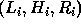
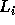
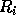
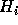
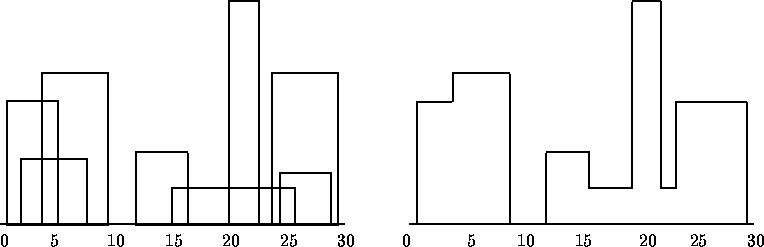
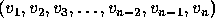
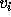

| The Skyline Problem |
With the advent of high speed graphics workstations, CAD (computer-aided design) and other areas (CAM, VLSI design) have made increasingly effective use of computers. One of the problems with drawing images is the elimination of hidden lines -- lines obscured by other parts of a drawing.
You are to design a program to assist an architect in drawing the skyline of a city given the locations of the buildings in the city. To make the problem tractable, all buildings are rectangular in shape and they share a common bottom (the city they are built in is very flat). The city is also viewed as two-dimensional. A building is specified by an ordered triple  where  and  are left and right coordinates, respectively, of building i and  is the height of the building. In the diagram below buildings are shown on the left with triples (1,11,5), (2,6,7), (3,13,9), (12,7,16), (14,3,25), (19,18,22), (23,13,29), (24,4,28)
the skyline, shown on the right, is represented by the sequence: (1, 11, 3, 13, 9, 0, 12, 7, 16, 3, 19, 18, 22, 3, 23, 13, 29, 0)

The input is a sequence of building triples. All coordinates of buildings are positive integers less than 10,000 and there will be at least one and at most 5,000 buildings in the input file. Each building triple is on a line by itself in the input file. All integers in a triple are separated by one or more spaces. The triples will be sorted by , the left x-coordinate of the building, so the building with the smallest left x-coordinate is first in the input file.
The output should consist of the vector that describes the skyline as shown in the example above. In the skyline vector  , the  such that i is an even number represent a horizontal line (height). The such that i is an odd number represent a vertical line (x-coordinate). The skyline vector should represent the ``path'' taken, for example, by a bug starting at the minimum x-coordinate and traveling horizontally and vertically over all the lines that define the skyline. Thus the last entry in the skyline vector will be a 0. The coordinates must be separated by a blank space.
1 11 5 2 6 7 3 13 9 12 7 16 14 3 25 19 18 22 23 13 29 24 4 28
1 11 3 13 9 0 12 7 16 3 19 18 22 3 23 13 29 0